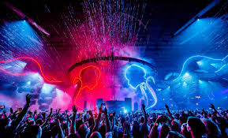
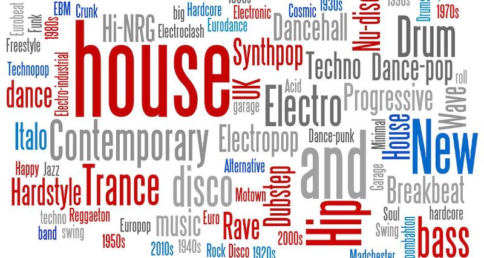
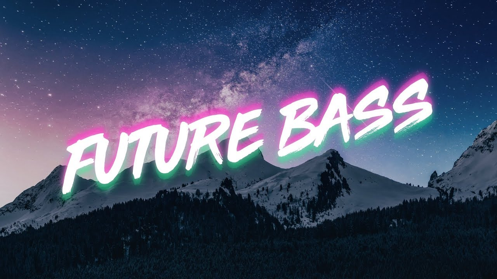
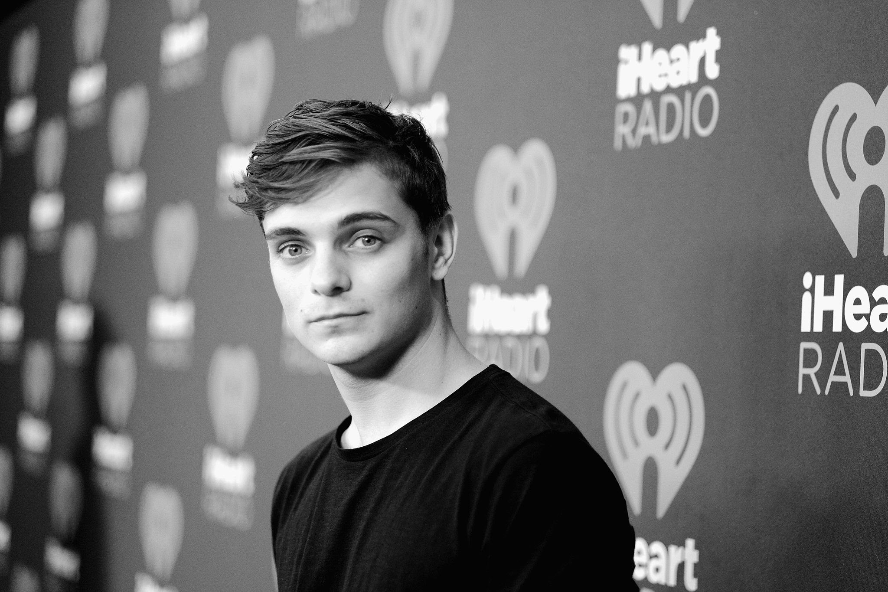
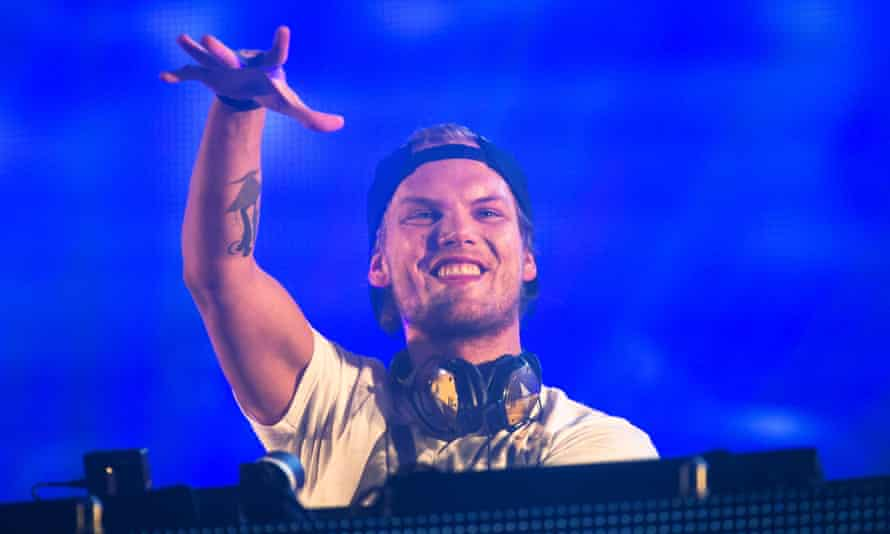

What is EDM?
Electronic dance music (EDM), also known as dance music, club music, or simply dance, is a broad range of percussive electronic music genres made largely for nightclubs, raves, and festivals. It is generally produced for playback by DJs who create seamless selections of tracks, called a mix, by segueing from one recording to another. EDM producers also perform their music live in a concert or festival setting in what is sometimes called a live PA.
In electronic music, you are not limited to a live recording situation, so you have complete creative control over every second of a song. You can place a kick drum exactly on the beat at whatever tempo you want. Synth not fizzy enough? You can add something on top. Vocal sample sucks? Just replace it with one of the thousands in your sample library. As a result, EDM tunes sound inherently bigger and cleaner because there is more control in the process, from the initial idea to the final product.
Genres of EDM
In reality, there are so many genres and sub-genres of EDM it would be nearly impossible to cover them all. Beatport is the industry leader for downloading Electronic Dance Music and they list about 50 subgenres so that is a rough gauge of how many current popular ones there are. The 10 most popular EDM genres are House, Techno, Trance, Dubstep, Drum&Bass, UK Garage, Hard Dance, Moobathton, Breakbeat, and Downstep, respectively.
My personal favorite genre is Future Bass, a sub-genre under Drum&Bass originated in the 2010s. It can be described as music that "takes the ecstatic drops of dubstep or trap, but provides a warm bounce rather than a lumbering bruteness. Basslines are provided by harsh, detuned synths that buzz and purr instead of gulp and whomp." It was popularised in the mid to late-2010s by artists such as Illenium and San Holo. 2016 was seen as the breakout year for the genre. Indeed, for me, 2016 was the single year with most highest quality EDMs.
People
People who produce and play EDM are called DJ (disc jockey). DJ is a person who plays recorded music for an audience. DJs use audio equipment that can play at least two sources of recorded music simultaneously and mix them together to create seamless transitions between recordings and develop unique mixes of songs. Often, this involves aligning the beats of the music sources so their rhythms and tempos do not clash when played together and to enable a smooth transition from one song to another. DJs often use specialized DJ mixers, small audio mixers with crossfader and cue functions to blend or transition from one song to another.
The DJ Magazine (DJ Mag) ranks top 100 DJs annually. Although the ranking has some merits, many people aren't satisfied by it and have their own rankings. Two of my favorite DJs are Avicii (Tim Bergling) and Martin Garrix. At the age of 16, Bergling began posting his remixes on electronic music forums, which led to his first record deal. He rose to prominence in 2011 with his single "Levels". His debut studio album, True (2013), peaked in the top ten in more than fifteen countries and topped international charts; the lead single, "Wake Me Up", topped most music markets in Europe and reached number four in the United States. In 2015, Bergling released his second studio album, Stories, and in 2017 he released an EP, Avīci (01). His catalog also included the singles "The Days", "The Nights", "Waiting for Love", and "Without You". Bergling was nominated for a Grammy Award for his work on "Sunshine" with David Guetta in 2012 and "Levels" in 2013. Several music publications credit Bergling as among the DJs who ushered electronic music into Top 40 radio in the early 2010s. Bergling retired from touring in 2016 due to health problems, having suffered from stress and poor mental health for several years. On 20 April 2018, he committed suicide in Muscat, Oman. His third album, Tim, was released posthumously in 2019.